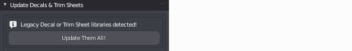

Update Decal Libraries
Decals created with earlier DECALmachine versions, such as 1.8, 1.9 and 2.0 need to be updated before they can be used in DECALmachine 2.1.
The tools to do so are located in the Update Decals panel.
Note
To skip updating Decals from version, just remove the individual Decal's folder.
DECALmachine 1.4.x Decals
As of version 2.1, Decals from version 1.4 can no longer be updated.
Maintaining update paths for multiple different versions is unfortunately not feasible.
The last version capable of updating 1.4 legacy Decals was DECALmachine 2.0.1, released over 2.5 years after the last 1.4.x release.
DECALmachine 1.8-1.9 Decals
DECALmachine 2.0 Decals
The process for updating Decals from version 2.0.x is identical to the one described above. The tool to do so, can be found in the 2.0.x panel.
Note
Trim Sheet Libraries can also be updated using the tool.
The only difference is, you don't need to select a target library. Instead a new one just for this sheet will be created automatically.
DECALmachine 2.1 Decals
Note
Updating Decals created in DECALmachine 2.1-2.4.1 is only available (and required) in Blender 3.0.
Again, the process is identical to the other ones described above, but this time done from the new 2.1-2.4.1 panel.
Batch Updating
As of version 2.1, DECALmachine can batch update multiple Decal libraries from multiple versions in one go.
In version 2.5, all decals created in versions 1.8 - 2.4.1 are supported.
To batch update them all at once, make sure to place them in the decals folder in your assets path.
in the Update Panel
 batch update legacy decal libs in your assets folder from the update panel in the 3d views sidebar
in the Addon Preferences
 import legacy libraries from the addon preferences, and batch update them directly too
import legacy libraries from the addon preferences, and batch update them directly too
Once you've updated your Decal libraries, you can proceed to the next page, to learn how to update Blend files using the previous Decals too.